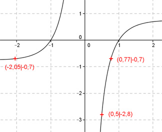
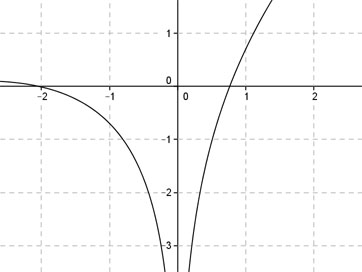

Aufgabe 104 Ergänzen Sie die Wertetabelle für den Graphen: Ergänzen Sie die Wertetabelle für den Graphen: ln x2 y = ------- x x -2,05 oder 0,77 0.5 y -0,7 -2,8 ln 0,52 y = f(0,5) = --------- = -2,8 0,5  An welchen Stellen x die Funktion den Wert -0,7 annimmt, ist elementar nicht zu ermitteln. Abgelesen: Es sind 2 Stellen. Zur Berechnung wendet man ein Näherungs- verfahren an, hier die Regula falsi. f(x) = 6,8 eingesetzt : ln x2 -0,7 = ------- |*x x -0,7x = ln x2 |+ 0,7x ln x2 + 0,7x = 0 Als Funktion: y = ln x2 + 0,7x  Abgelesen: Nullstellen zwischen -1,8 und -2,2 und 0,6 und 0,8. (Vorzeichenwechsel für f(x)) Regula falsi: x0 = gesuchte Nullstelle x1 * |y(x2)| + x2 * |y(x1)| x0 = ------------------------------ |y(x1)| + |y(x2)| Nullstelle x0 zwischen -1,8 und -2,2 mit Excel ermittelt: A B C D E F G H I J -2,2 -1,8 0,0844 0,0369 -0,1857 -0,0664 -0,2522 0,1213 -2,0783 0,0083 -2,0783 -1,8 0,0844 0,0083 -0,1755 -0,0149 -0,1904 0,0927 -2,0534 0,0016 -2,0534 -1,8 0,0844 0,0016 -0,1734 -0,0029 -0,1763 0,0860 -2,0487 0,0003 -2,0487 -1,8 0,0844 0,0003 -0,1730 -0,0006 -0,1735 0,0847 -2,0477 0,0001 -2,0477 -1,8 0,0844 0,0001 -0,1729 -0,0001 -0,1730 0,0845 -2,0476 0,0000 -2,0476 -1,8 0,0844 0,0000 -0,1729 0,0000 -0,1729 0,0844 -2,0475 0,0000 -2,0475 -1,8 0,0844 0,0000 -0,1729 0,0000 -0,1729 0,0844 -2,0475 0,0000 Die gesuchte Nullstelle ergibt sich nach mehreren Näherungen mit ausreichender Genauigkeit zu x01 = -2,05 gerundet. Erläuterungen zur Tabelle siehe Aufgabe 101. Die Nullstelle zwischen 0,6 und 0,8 ergibt sich nach dem selben Verfahren zu x02 = 0,77 gerundet.